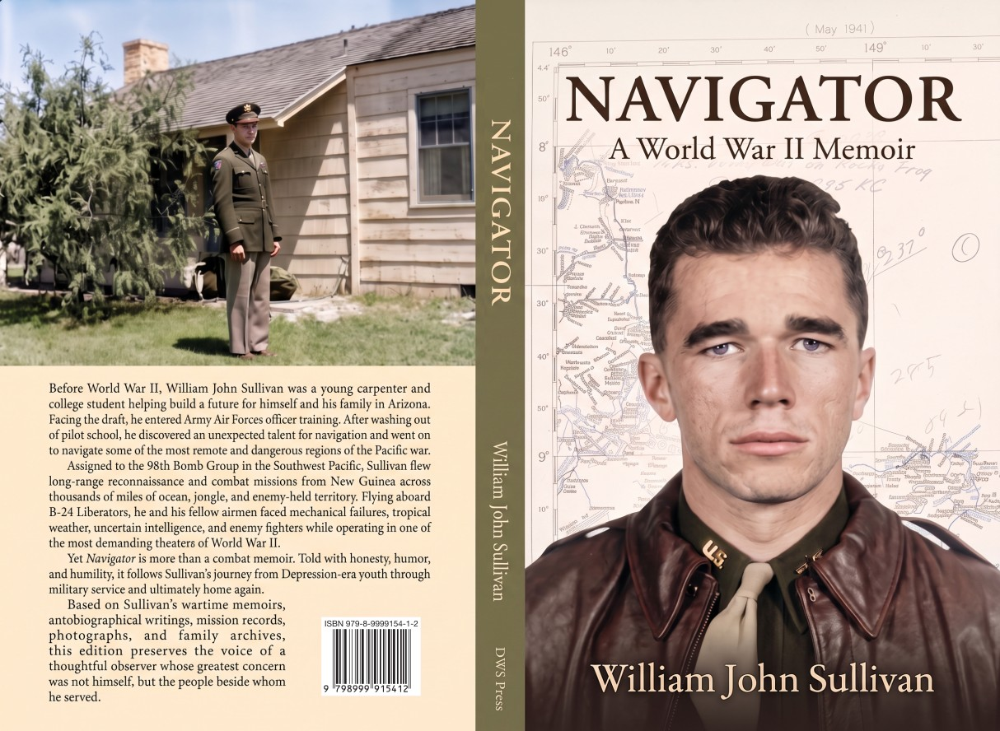

Navigator
A World War II Memoir
by William John Sullivan
From Army Air Forces training fields in the United States to the dangerous skies of the South Pacific, Navigator follows William John Sullivan's journey from young civilian to combat navigator aboard B‑24 Liberators during World War II.
Built from wartime memoirs, mission records, photographs, maps, and archival sources, Navigator preserves one airman's personal experience of service, combat, and homecoming.
Publisher: DWS Press
Format: Trade Paperback
ISBN: 979-8-9999154-1-2
About the Book
Navigator is more than a combat memoir. It is the story of an American coming of age during the Great Depression and World War II. Written with honesty, humor, and humility, it chronicles military training, long-range reconnaissance missions, daily life in the South Pacific, and the challenges of returning home after the war.
The published volume combines memoir material with supporting maps, historical research, mission details, and photographs preserved in the Sullivan Family Archive.
Author
William John Sullivan served as a navigator with the 98th Bomb Group during World War II. Following the war he raised a family, pursued a career in Arizona, and preserved his wartime experiences through memoirs, photographs, letters, and historical records.
Navigator represents the culmination of those efforts and preserves his story for future generations.
Wraparound Cover
